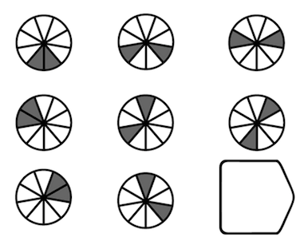

IQ quiz
Powered by Acorn
Rules of this quiz
introduction and explaination of rules
Start
1. Which figure that can fill the blank?

Submit
2. In the following figures, one of the four patterns (a), (b), (c) and (d) in the previous row is known to have the most similarity to one of the patterns in the next row. So, which one is it?
Submit
3. In the following figure, which figure in the next row should be filled in in the blank circle on the upper row?
Submit
4. Peter's son is the father of my son. Then the relationship between "I" and Peter is.
"I" am Peter's grandfather
"I" am Peter's father
"I" am Peter's son
"I" am Peter's grandson
"I" am Peter.
Submit
5. Filling: The emperor is not the poor, there are also poor people in the misers, so some ____ are not ____.
Emperor, Emperor
Miser, Miser
Miser, Emperor
Emperor, Miser
Submit
6. Which figure logically belongs on the spot of the question mark?
Submit
7. A man's speed with the current is 15 km/hr and the speed of the current is 2.5 km/hr. The man's speed against the current is:
8.5 km/hr
9 km/hr
10 km/hr
12.5 km/hr
Submit
8. There are 4 families living in a row. Known: A is the neighbour of B; A and D are not next to each other. If the D and C families are not next to each other, then who is next to C?
A
B
C
D
Submit
9. Please find out the rules and fill in the appropriate figures in the space of the third empty pattern.
2
3
4
5
Submit
10. The younger brother of Mary counted the number of her brothers and sisters and found that his brother was one more than his sister. So how many more are Mary’s brothers than her sisters?
1
2
3
4
Submit